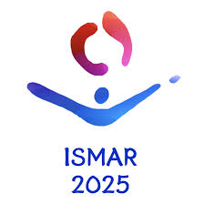

ISMAR 2025VR Research · Eye Tracking · Cognitive Science
Gaze Behavior & Field Dependency in VR
Investigating how individual differences in a behavioral trait, field dependency, influence gaze behavior and cybersickness susceptibility in virtual environments. In RStudio, I analyzed eye-tracking data with Recurrence Quantification Analysis (RQA) to identify behavioral predictors of cybersickness dropout. This work was accepted to ISMAR 2025, bridging cognitive psychology, immersive technology, and data science.
View on IEEE →